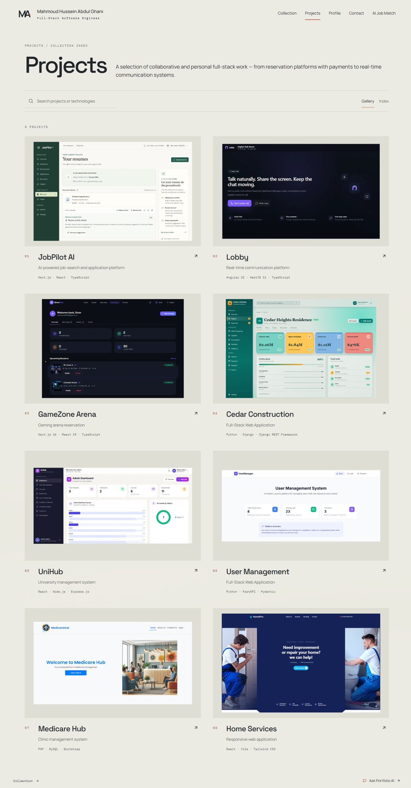
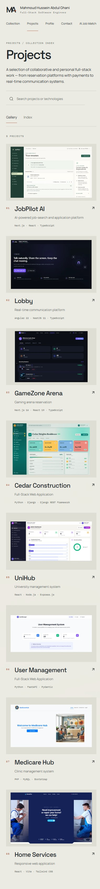
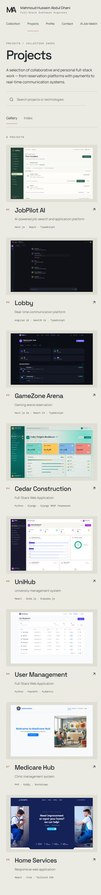
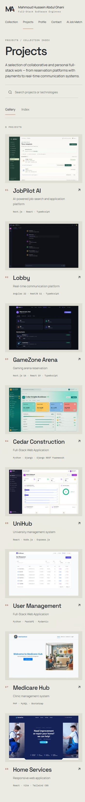

Eight gallery covers, matched image areas
Refinement 2 · 8 October 2026. Fresh captures of actual project frontends. Every cover uses the same 1600 × 1000 master, 1440 × 900 complete product view, 80px / 50px matte and unchanged colors. No CSS padding is added to these exported margins.
Complete-page images expand the existing scroll container for capture only. Viewport links show the unchanged application layout. Open screenshots or masters to inspect full detail.
1363 × 936


Original viewport
 Original viewport
Original viewport
1280 × 720


 Original viewport
Original viewport
390 × 844


Original viewport


Original viewport
360 × 800



Original viewport
Verified material for every cover
Captures already match 16:10; none is cropped or stretched. Seven use a 1536 × 960 CSS viewport at DPR 2; Medicare uses 1280 × 800 to preserve its complete hero before the next section. Actual product differences remain visible. Protected workflows were rendered from real code with published/test data, without backend services or live records.
| Project | Source and treatment | Original capture | Asset |
|---|---|---|---|
| JobPilot AI | Fresh local frontend capture at /resumes; existing pdfResume and docxResume fixtures from frontend/tests/resumes.test.tsx Actual isolated frontend, 1536×960 CSS viewport at DPR 2. Existing test CV documents; no new uploads, AI generation or live records. | 3072 × 1920 Full capture → 1440 × 900 | 1600 × 1000 master |
| Lobby | Fresh isolated Angular frontend; exact text and reply/reaction reused from the already-published public/projects/lobby/community-chat.webp 1536×960 CSS viewport at DPR 2. No newly fabricated messages, private conversation reads or real-time connection. Five known published participant names, six existing messages; synthetic local IDs only. | 3072 × 1920 Full capture → 1440 × 900 | 1600 × 1000 master |
| GameZone Arena | Fresh isolated Next frontend /dashboard; two booking entries reconstructed from the published original user_overview.webp, using repository room images 1536×960 CSS viewport at DPR 2. Existing published rooms, dates, durations, prices and loyalty value. Only two visible source bookings reused; no unknown third booking invented. Placeholder account email; no database. | 3072 × 1920 Full capture → 1440 × 900 | 1600 × 1000 master |
| Cedar Construction | Fresh rendering of the repository’s .visual-comparison/local-project-detail.html with its actual static styles and scripts 1536×960 CSS viewport at DPR 2. Existing example-project data, sanitized inactive CSRF field, read-only local asset server. Complete primary panels retained. | 3072 × 1920 Full capture → 1440 × 900 | 1600 × 1000 master |
| UniHub | Fresh isolated React frontend; dashboard responses reuse the approved Admin.webp figures and six course/chart entries 1536×960 CSS viewport at DPR 2. Actual frontend components, source figures 3 students, 2 professors, 6 courses, 20 credits, 11 enrollments and 7 active accounts. No student records or live login required. | 3072 × 1920 Full capture → 1440 × 900 | 1600 × 1000 master |
| User Management | Fresh isolated current React frontend /admin; first six nondeleted records from the repository’s original demo dataset at f7fab69:src/services/api.js 1536×960 CSS viewport at DPR 2. Reused Alice/Bob/Charlie/Diana/Eve/Frank example.com demo records; password fields discarded. Waited for every row and parent entrance to settle before capture. No live accounts accessed. | 3072 × 1920 Full capture → 1440 × 900 | 1600 × 1000 master |
| Home Services | Fresh read-only homepage at https://home-services-coral.vercel.app/ 1536×960 CSS viewport at DPR 2 preserves both visible worker photos and all core hero content. Only captured scrollbars suppressed; intentional original lower geometric shape preserved. | 3072 × 1920 Full capture → 1440 × 900 | 1600 × 1000 master |
| Medicare Hub | Fresh read-only public homepage at https://clinic-management-system.kesug.com/ 1280×800 CSS viewport at DPR 2 frames the complete introduction and image before the next section. Actual admin and appointment sources inspected; decorative admin background rejected, no populated approved appointment capture available. No patient data accessed. | 2560 × 1600 Full capture → 1440 × 900 | 1600 × 1000 master |


Medicare's public homepage is integrated. Its original artwork and the separate identity proposal remain unchanged. No approved populated clinical workflow screenshot was available; no patient data was fabricated. Resolutions, hashes and delivery sizes.
Verification
123/123 Chrome tests and 46/46 WebKit tests passed with zero skips or flaky retries. Lint, typecheck, production build, two image-bounds/format tests and ten assistant-stream tests passed. All eight images were bounded across ten high-density phone/landscape layouts. WebKit-discovered gallery focus restoration and Contact keyboard scroll issues were fixed. Check results · Device geometry.
Physical iOS/Android phones, native keyboards and mobile browser chrome remain unverified. Automated Windows WebKit is engine coverage, not a physical Safari test. The user authorized committing and pushing the review branch after these checks. No merge, manual deployment, production Contact submission or live CMS/database write occurred.